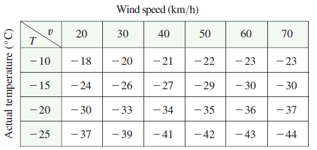

The wind-chill index \(W\) is the perceived temperature when the actual temperature is \(T\) and the wind speed is \(v\), so we can write \(W = f(T, v)\). The following table of values is an excerpt from Table 1 in Section 14.1. Use the table to find a linear approximation to the wind-chill index function when \(T\) is near \(-15^\circ\)C and \(v\) is near 50 km/h. Then estimate the wind chill index when the temperature is \(-17^\circ\)C and the wind speed is 55 km/h.
